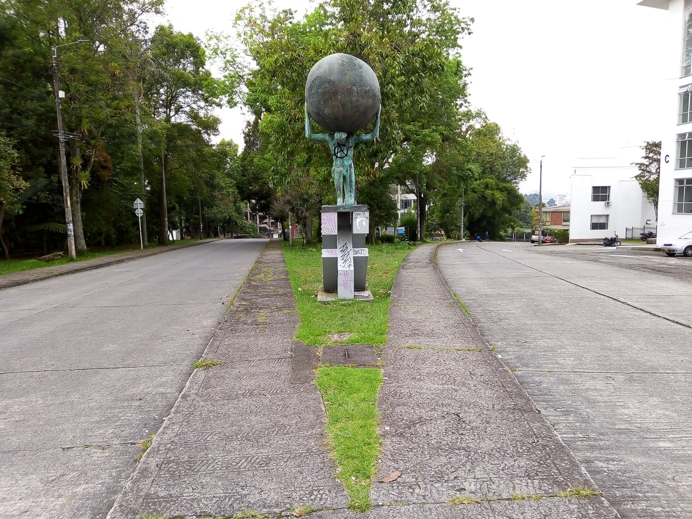

-

Estatua de Atlas
Escultura de Atlas en bronce y lamina, cargando una bola de bronce, por Elma Pignalosa. Se pueden evidenciar marcas y pintura que se han realizado en diferentes manifestaciones a lo largo de los años.
-

Fotografía de naturaleza y carretera
Aunque el parque aun conserva una relativa frondosidad, Este tuvo que ser podado anteriormente por la inseguridad de inseguridad que se percibia hace años cuando la vegetacion obstaculizaba la visibilidad dentro
-
Fotografia antigua
Fotografia antigua de la univesidad de caldas(centro), y la Universidad Nacional(derecha), Donde se puede ver el estado incial del parque.
-
Vista desde la Universidad Nacional
Se comparte el espacio con la sede Palogrande de la Universidad Nacional
-
Fotografia del parque vacio
Vista desde el frente de la Universidad de Caldas. Donde normalmente se aglomeran estudiantes, comerciantes y transeuntes a descansar y consumir la comida que se suele vender en los carritos del parque. Se destacan las famosas empanadas de la gotera
-

-
-